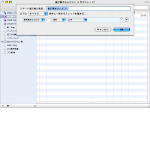
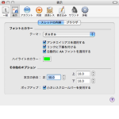

BathyScaphe の新機能
BathyScaphe の新機能
このバージョンの BathyScaphe には、２ちゃんねるのブラウズをさらに快適にするための、たくさんの新機能が含まれています。 BathyScaphe の詳細については、「BathyScaphe ヘルプ」や BathyScaphe の Web サイトを参照してください。
スマート掲示板
BathyScaphe 内部でのスレッド一覧の管理方法が刷新されました。とくに、「Mail」のスマートメールボックスや「iTunes」のスマートプレイリストと同様の「スマート掲示板」を作成して、スレッドを様々な条件で抽出できるようになりました。
スレッドのテーマ
スレッドを表示する際のフォント、カラーなどをまとめて管理・切り替えできる、新しい「テーマ」機能が導入されました。整理されたインタフェースで、素早くテーマを選択・作成できます。
その他の新機能
その他の新機能について詳しくは、以下のトピックをそれぞれ参照してください。
- ２ちゃんねるのスレッドで提供されている「関連キーワード」を、BathyScaphe から参照可能になりました。ナビゲーションバーの左にあるキーワードボタンをクリックするだけです。
関連キーワードを参照する - 「履歴」メニューに「最近表示した掲示板」が追加されました。
履歴を見る - 「情報を見る」は、ポップアップではなく通常のウインドウで表示されるようになり、情報の確認やコピーがより行いやすくなりました。
スレッドの情報を見る - 掲示板リストの項目を簡単に選択できる「Type-To-Select」機能が追加されました。
便利な操作 - 簡易逆参照ポップアップ機能が追加されました。あるレスに対するアンカーを含むレスを抽出してポップアップします。
逆参照ポップアップを利用する - BathyScaphe のアップデートを自動的にチェックする、ソフトウェア・アップデート機能が内蔵されました。常に最新の BathyScaphe を使用することができます。
「一般」を設定する